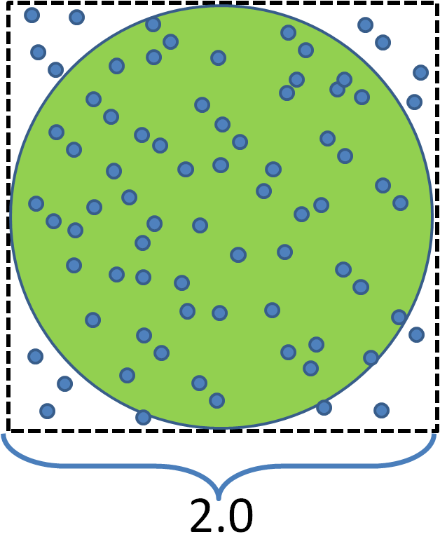

確率論 6
[1][2]のおかげで[3]がかなりしっかり読めるようになってきた．
- [1]結城浩, 数学ガール(乱択アルゴリズム)
- [2]平岡和幸, 堀玄 プログラミングのための確率統計
- [3]伊庭幸人, 種村正美, 計算統計 2 マルコフ連鎖モンテカルロ法とその周辺 (統計科学のフロンティア 12)
モンテカルロ法(例題)
モンテカルロ法とは，目的の数値や関数の近似解を得るための，乱数を用いたアルゴリズムの総称．例題．「半径1の円の面積をπを使わないで求めよ」
モンテカルロ法による解法
-1)[-1,1]×[-1,1]の二次元領域に一様分布に従う点列x0, x1,...xNを発生させる．
-2)円の面積 S = (円内に入った点数) / (総点数N) × (領域全体の面積) とする．

static double calcPI(int ptNum = 10000000) { //[-1,1]×[-1,1]の範囲に一様分布に従う点をptNum個発生させる int numOfInsidePt = 0; for( int i=0; i<ptNum; ++i){ double x = 2 * rand()/(double)RAND_MAX -1.0; double y = 2 * rand()/(double)RAND_MAX -1.0; if( x*x + y*y <= 1.0 ) ++numOfInsidePt; } //円の面積(1*1*π) = (半径1の円に入ったサンプル点数) / 全てのサンプル点数 * 全体の長方形数 return numOfInsidePt / (double) ptNum * (2.0*2.0); }実行結果
calcPI(10^2) = 3.27999999
calcPI(10^4) = 3.14639999
calcPI(10^6) = 3.14144800
calcPI(10^8) = 3.14101904
少数第3桁以上の精度は出なかった．
モンテカルロ積分
○モンテカルロ積分法○
-- f(x)を，d次元空間Rdで定義されたスカラー関数とする．(つまり f(x)∈R , x∈Rd)
-- 領域ΩをRdの部分空間とする．
一様分布に従うN個のサンプル点 x1,...,xNに対していかが成り立つ．
d{\b x} \simeq \frac{V}{N}\sum_{i=1}^{N} f({\b x}_i) )
ただし，Vは領域Ωの体積である．

つまり，領域Ω(d次元空間)の積分をサンプル点の和で近似できる．
サンプル点が多いほど近似制度が上がるが，計算コストもかかる．
-- f(x)を，d次元空間Rdで定義されたスカラー関数とする．(つまり f(x)∈R , x∈Rd)
-- 領域ΩをRdの部分空間とする．
一様分布に従うN個のサンプル点 x1,...,xNに対していかが成り立つ．
ただし，Vは領域Ωの体積である．
つまり，領域Ω(d次元空間)の積分をサンプル点の和で近似できる．
サンプル点が多いほど近似制度が上がるが，計算コストもかかる．
この近似が成り立つ証明．
まず，Uniform Law of Large Numbersより，十分大きなNに対して，
ただし，x1,...,x2は，領域Ω内の一様分布に従うサンプル点であり，p(x)は領域Ω内の一様分布の確率密度関数．
つまり，
以上より，
先の円の面積の解法は，このモンテカルロ積分法を以下のセットアップで使ったものである．
領域Ω : [-1,1]×[-1,1]
関数f(x,y): f(x,y) = 1 if (x,y) が円の内部
0 if (x,y) が円の外部
(本題と関係ないが，久しぶりにやったら苦戦したので，この積分問題を解いてみる．)
モンテカルロ法の一般形
前述のモンテカルロ積分では，一様分布に従うサンプル点群で，積分を近似していた．より一般的に，任意の確率分布Q(X)に従うサンプル点群を用いる手法を以下に示す．
○解きたい問題○
離散的な確率変数を考えている場合.
確率変数Xが，正規化定数の不明な確率分布P(X=x)に従うとし， (xはd次元空間の位置ベクトルとする．)
以下の期待値を求めたい．
) = \sum_{{\bf x}\in\Omega}f({\bf x})P({\bf x}) )
連続的な確率変数を考えている場合.
確率変数Xが, 正規化定数の不明な確率密度関数pX(X=x)により定義される確率分布に従うとし， (xはd次元空間の位置ベクトルとする．)
以下の期待値を求めたい．
) = \int_{\Omega}f({\bf x})p_X({\bf x}) d{\b x} )
関数f(x）は何かしらの統計量を表すものとする．
確率分布P(x)の正規化定数をZとすると， = \hat{P}({\bf x})/Z ) , と書けて，
, と書けて，) は計算できるものとする(Zはunknown)．
は計算できるものとする(Zはunknown)．
また，確率密度関数pX(x)の正規化定数をZとすると， = \hat{p_X}({\bf x})/Z ) , と書けて，
, と書けて，) は計算できるものとする(Zはunknown)．
は計算できるものとする(Zはunknown)．
離散的な確率変数を考えている場合.
確率変数Xが，正規化定数の不明な確率分布P(X=x)に従うとし， (xはd次元空間の位置ベクトルとする．)
以下の期待値を求めたい．
連続的な確率変数を考えている場合.
確率変数Xが, 正規化定数の不明な確率密度関数pX(X=x)により定義される確率分布に従うとし， (xはd次元空間の位置ベクトルとする．)
以下の期待値を求めたい．
関数f(x）は何かしらの統計量を表すものとする．
確率分布P(x)の正規化定数をZとすると，
また，確率密度関数pX(x)の正規化定数をZとすると，
○解法(モンテカルロ法の一般形)○
離散的な確率分布の場合．
1) 次の条件を満たす確率分布Q(X)を用意する．
-確率分布Q(X)に従うサンプル点群を効率的に発生させられる．
-サンプル点xを与えると，その確率Q(X=x)が計算できる．
-確率分布P(X)に似ている．（似ていなくても計算はできるが効率が悪くなる）
2) 確率分布Q(X)に従うサンプル点群をN個発生させる． x1, x2, ..., xN
3) 期待値と正規化定数を以下の通り計算する．
}{ Q({\b x}_i)} )

) = \sum_{{\bf x}\in\Omega}f({\bf x})P({\bf x}) \simeq \frac{1}{NZ} \sum_{k=1}^N f({\b x}_i) w_i )
---連続的な確率分布の場合．--- (確率分布が確率密度関数になるだけ)
1) 次の条件を満たす確率分布Q(X)を用意する．
-確率分布Q(X)に従うサンプル点群を効率的に発生させられる．
-サンプル点xを与えると，その確率密度q(x)が計算できる．
-確率密度関数が求めたいpX(x)に似ている．（似ていなくても計算はできるが効率が悪くなる）
2) 確率分布Q(X)からサンプル点群をN個発生させる． x1, x2, ..., xN
3) 期待値と正規化定数を以下の通り計算する．
}{ q({\b x}_i)} )
) = \int_{\Omega}f({\bf x})p_X({\bf x}) d{\b x} \simeq \frac{1}{NZ} \sum_{k=1}^N f({\b x}_i) w_i )
離散的な確率分布の場合．
1) 次の条件を満たす確率分布Q(X)を用意する．
-確率分布Q(X)に従うサンプル点群を効率的に発生させられる．
-サンプル点xを与えると，その確率Q(X=x)が計算できる．
-確率分布P(X)に似ている．（似ていなくても計算はできるが効率が悪くなる）
2) 確率分布Q(X)に従うサンプル点群をN個発生させる． x1, x2, ..., xN
3) 期待値と正規化定数を以下の通り計算する．
---連続的な確率分布の場合．--- (確率分布が確率密度関数になるだけ)
1) 次の条件を満たす確率分布Q(X)を用意する．
-確率分布Q(X)に従うサンプル点群を効率的に発生させられる．
-サンプル点xを与えると，その確率密度q(x)が計算できる．
-確率密度関数が求めたいpX(x)に似ている．（似ていなくても計算はできるが効率が悪くなる）
2) 確率分布Q(X)からサンプル点群をN個発生させる． x1, x2, ..., xN
3) 期待値と正規化定数を以下の通り計算する．
証明) 離散の場合
正規化定数の定義
近似の≒の変形がややこしいが，Uniform Law of Large Numbersより，
また，期待値に関して，
連続の場合は，x∈Ω の和分がΩ内での積分になり，確率分布P(x)/Q(x)が確率密度関数p(x)/q(x)に置き換わるだけ．
モンテカルロ法の正しさは，大数の法則(Uniform Law of Large Numbers)に基づいている．
Nが十分大きければ (x1+x2+...+xN)/N ≒ ΣxP(x) とNでの割り算が確率分布Pの掛け算になっていることに注意．
離散の例．イジングモデル
連続の例．上の面積積分が連続確率分布の良い例．
P(X):[-1,1][-1,1] 2次元一様分布 (P(X) = 1/4)
f(x) = 1 if 点xが円の内部
= 0 others
とした時の期待値P(f(X))を，モンテカルロ法で求めているといえる．
確率論7へ